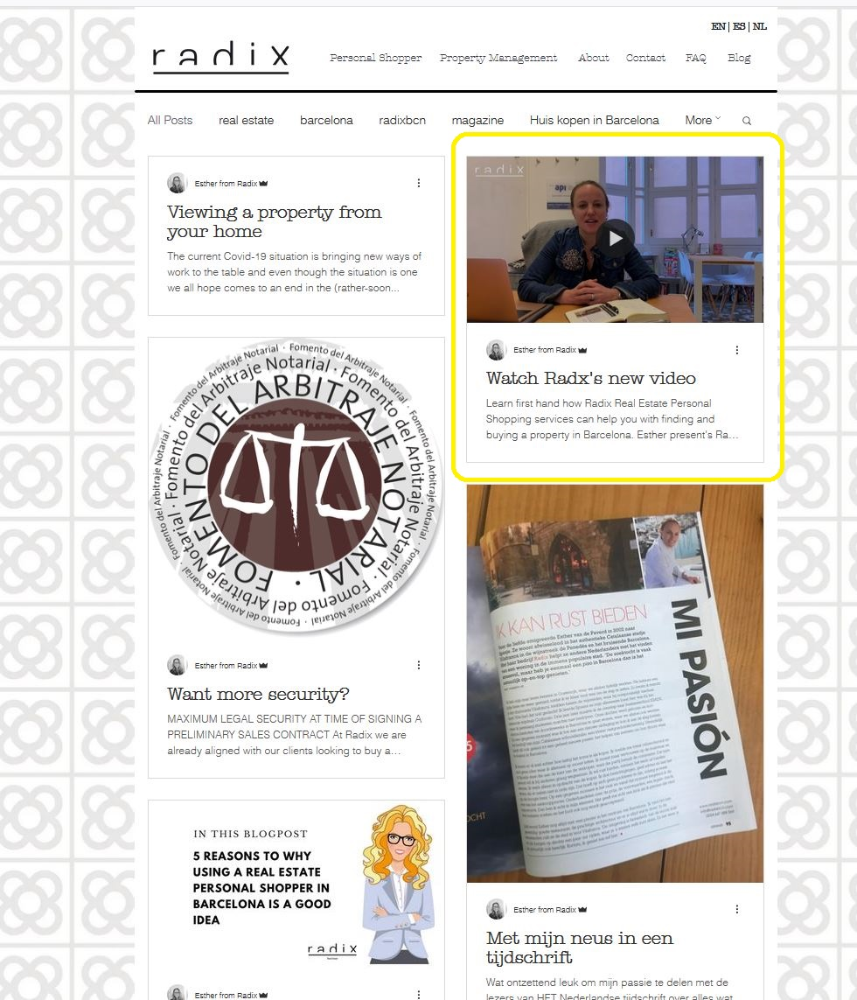
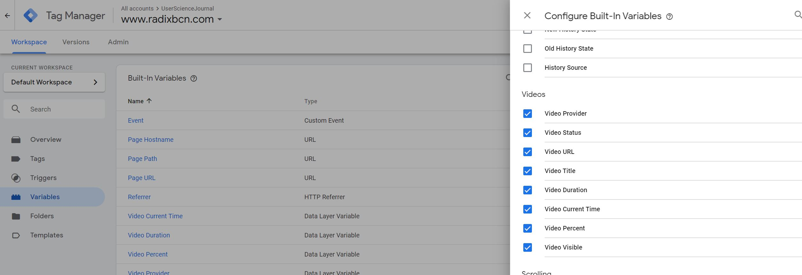
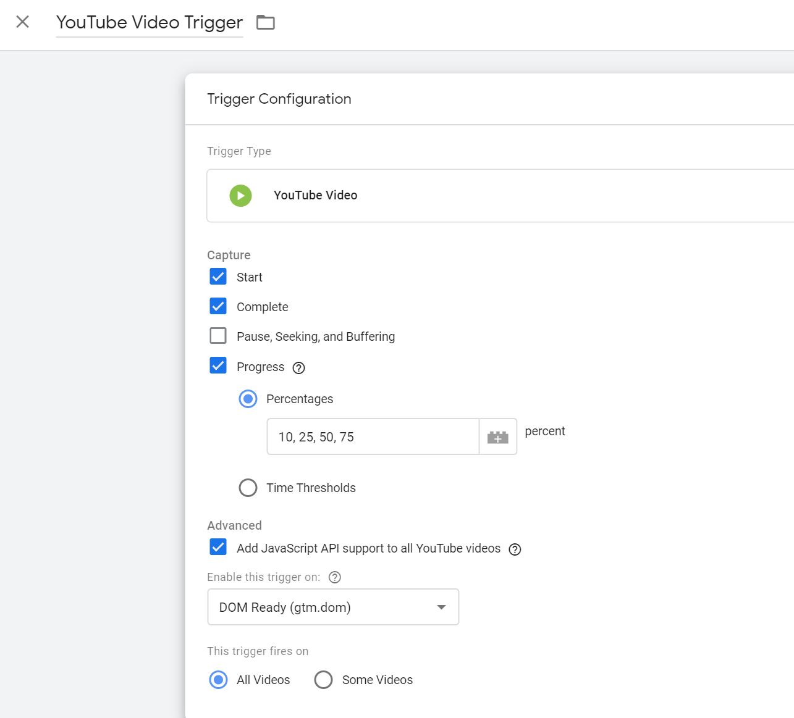
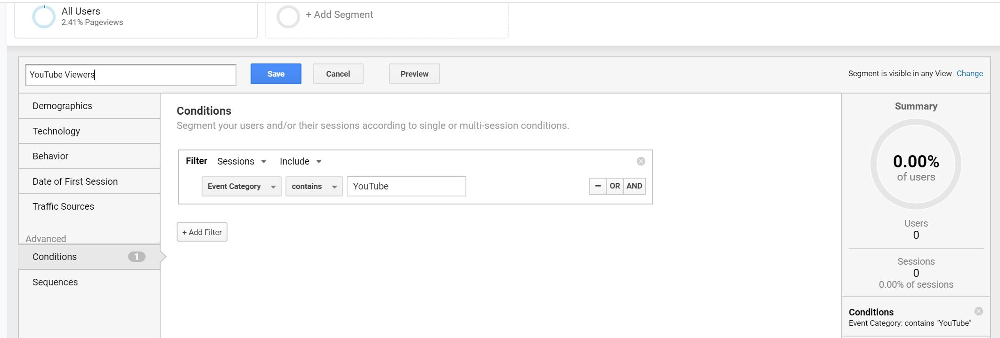
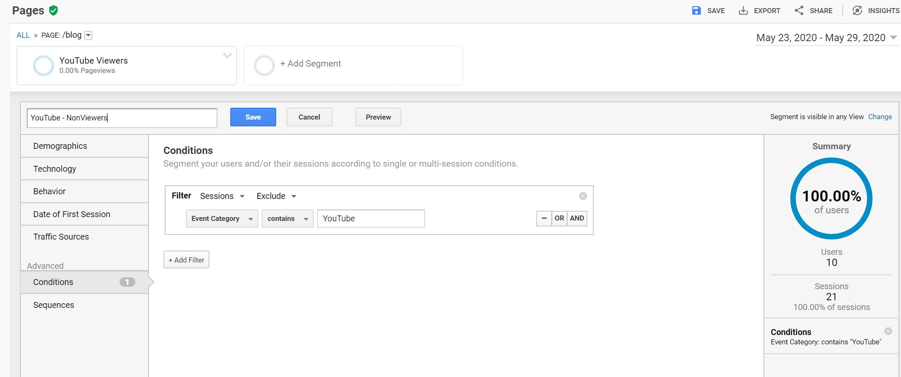
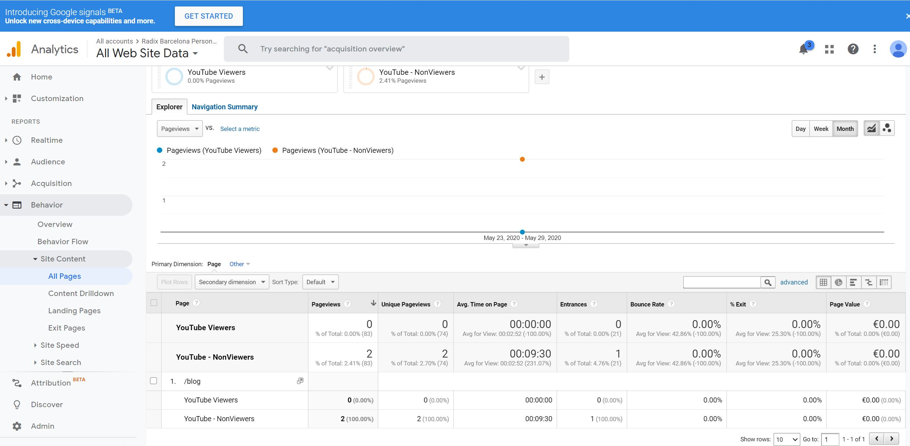

Radix Analytics Goal
This week I'm using Google Analytics to track views of the "Meet Radix" YouTube video on the Radix website. The video introduces Esther, Radix's founder, and explains Radix's unique Real Estate Personal Shopper service.
This "Meet Radix" YouTube video is linked on RadixBCN's blog page.How Do Users Achieve this Goal?
To find this video, users navigate to the Radix Blog page to find a blog entry introducing the video.
 At the top right of the Radix Blog page, there is an entry for the new Radix video.How to Track this Goal
We'll use Google Tag Manager in conjuction with Google Analytics to track these video views.
Step 1: Integrate Google Tag Manager with the Radix website in Wix
- I followed Google's instructions to create a Google Tag Manager Account.
- I created an account for the Radix website and received a Google Tag Manager account ID with this format GTM-XXXXXXX.
- I followed Wix's instructions to add the Google Tag Manager id to the Marketing Integrations section of RadixBCN's dashboard.
Now I can use Google Tag Manager to track things that happen on this Wix-based website.
Step 2: Enable YouTube Video Tracking in Google Tag Manager
Next I went into my new Google Tag Manager account for Radix to set up the tracking of YouTube videos.
- Variable Setup: I configured the variables by navigating to the Variable sections and selecting the "Configure" button. I then checked all the boxes for variables under the Video header.  Screenshot of the Configure Variables screen within Google Tag Manager. All 8 options under Videos are selected.
- Trigger Setup: I navigated to the Triggers section and clicked the New button. I named it "YouTube Video Trigger" and chose a trigger type of YouTube Video. In addition to the default options, I selected Progress with 10, 25, 50, and 75 percent to be able to track how much of the video was watched by users.  Screenshot of the Trigger Configuration within Google Tag Manager.
- I navigated to the Tags section and clicked the New button. I selected the following options for my new
Tag:
- Name: GA-Event-YouTube
- Tag Type: Google Analytics: Universal Analytics
- Track Type: Event
- Category: YouTube: {{Video Title}}
- Action: {{Video Status}}
- Label: {{Video Title}}
- Value: {{Video Current Time}}
- Non-Interaction Hit: True (so it wouldn't impact the Bounce Rate)
- Google Analytics Settings: I created a Google Analytics Settings Variable with Radix's Google Site Tag, which has this format: UA-#########-#
Step 3: Check out YouTube video views in Google Analytics
Now that my tag is set up I can go into Google Analytics and see how users are interacting with the YouTube video.
- In Google Analytics, I navigated to Behavior-->Site Content-->All Pages
- I selected the page where the "Meet Radix" YouTube video is posted: "/blog"
- To see which users have viewed the video, I added 2 Segments:
- YouTube Video Viewers: This is a Condition that filters Sessions that include the Event Category that include the word YouTube. Remember in the last steps, I created a tag with the category of "YouTube - {{Video Name}}".  Screenshot of the Add Segment screen for adding "YouTube Viewers"
- YouTube Video Non Viewers: This is a Condition that filters Sessions that don't include the Event Category that include the word YouTube.  Screenshot of the Add Segment screen for adding "YouTube - NonViewers"
- Now I can see which users have viewed the watched the video and which users have not. It looks like I need some more page views and video views to do some interesting analysis....  Screenshot of the last month's data shows 2 users visited the blog page and 0 users viewed the YouTube video.